Per a desenvolupadors de Drupal
Qui sóc
Robert Garrigós
Usuari de Drupal de fa 14 anys
Primera Drupalcon: Amsterdam 2005
(30-40 assistents)
Co-organitzador Drupalcon Barcelona 2007
(500 assistents)
Co-fundador Ymbra
Audiència
Quants coneixeu Backdrop
Quants l'heu usat alguna vegada
Quants heu fet una feina amb backdrop
Per què un derivat de Drupal?

Drupal per a la gran empresa (enterpriZe)
Drupal 8 beta is the latest, greatest release of the world's most widely used enterprise web CMS.
Direcció de Drupal:
Projectes més grans.
Codi més complex/abstracte/modern.
Pressupostos més grans.
Derivació i Manifest Backdrop
Setembre 2013
- Preservar audiència Drupal
- Drupal petita escala
- Producte x usuaris finals
- Cicle de llançaments diferent
- Codi a Github
Direcció de Backdrop:
Projectes més petits => més projectes.
Codi més accessibe.
Cost menor.
Missió de Backdrop
Backdrop CMS permet construir llocs web personalitzables i econòmics, de forma col·laborativa i amb programari de codi obert.
Principis de Backdrop
- La compatibilitat enrere és important
- Escriure codi per a una majoria
- Incloure característiques per a una majoria
- Assegurar que Backdrop es pugui ampliar
- Assegurar requeriments de sistema baixos
- Planificar i programar llançaments
- Mantenir-se sempre Gratuït i Codi Obert
Característiques
UX
principals
Nou sistema de dissenys (layouts) basats en Bootstrap 4

Pestanyes verticals sensibles
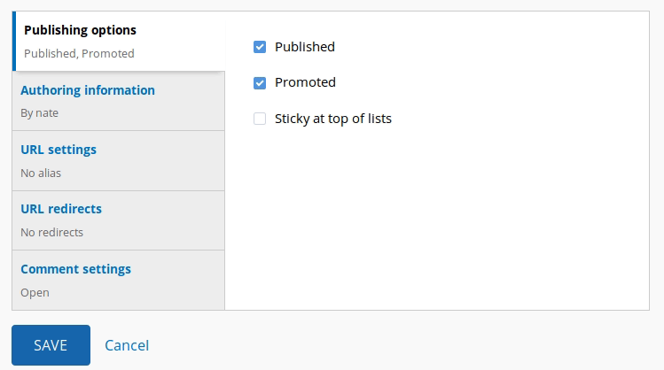Permisos i patrons URL en els formularis de creació de contingut

Instal·lació mòduls via web

CKeditor i gestió d'imatges a nucli
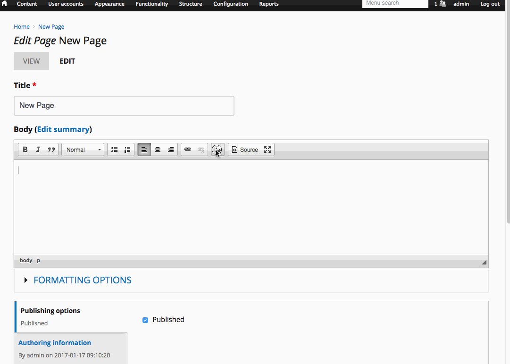Navegador d'imatges
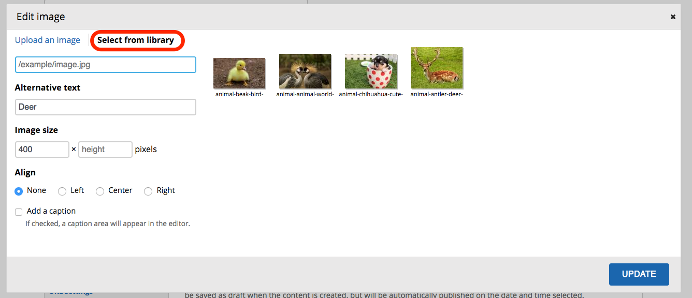Afegit d'imatges per arrossegament
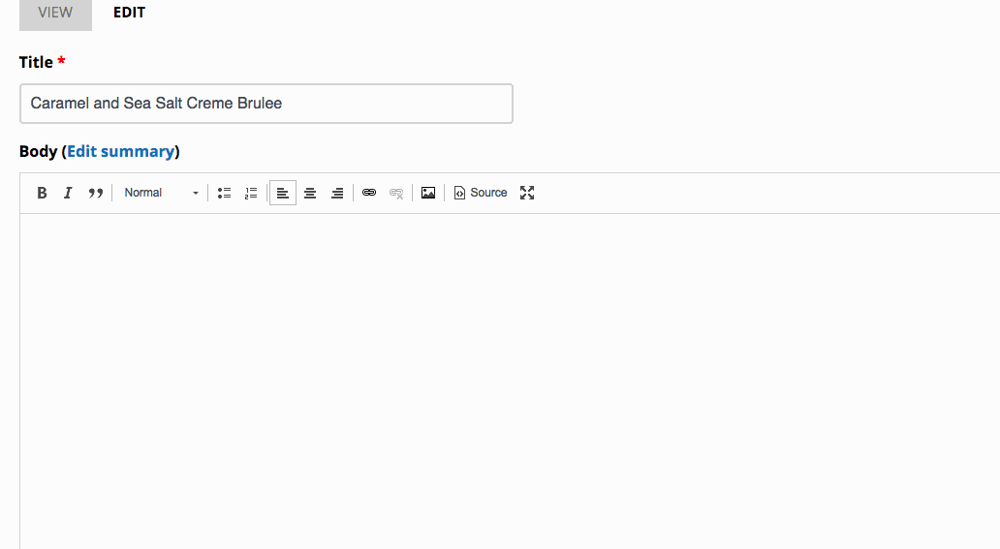Imatges i arxius com a entitats i gestionables

Enllaços a contingut existent a l'editor

Auto-tancament de comentaris
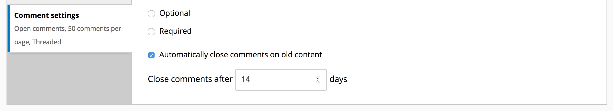Publicació programada
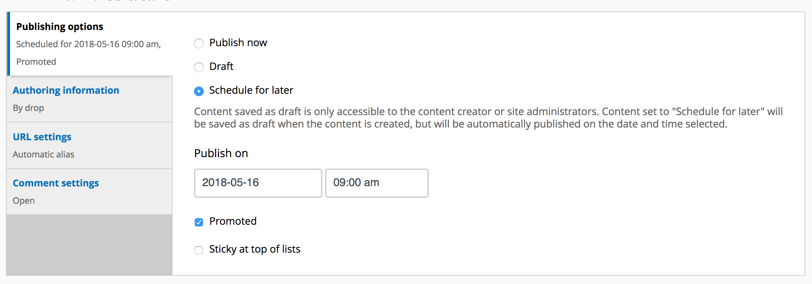Mòduls inclosos al nucli
- Admin menu
- Block class
- Caption Filter
- Chaos Tools
- CKeditor*
- Comment Closer
- Context*
- Date*
- Display Suite*
- Elements
- Entity API*
- Entity view mode
- Features*
- File entity*
- Global Redirect*
- HTML5 Tools module
- IMCE Wysiwyg bridge*
- Insert
- Instant Filter*
- jQuery Update*
- Libraries API*
- Link
- Menu block
- Menu translation (i18n)
- Module Filter*
- Nice Menus*
- Node Block
- Panels*
- Panels Everywhere
- Pathauto
- Project Browser
- Redirect
- Role Assign
- Scheduler*
- Smartmenus
- Strongarm
- Superfish Menus*
- Token
- Transliteration
- Media*
- Variable*
- Views
- Views Bulk Operations
- WYSIWYG*
Desenvolupament
amb
Backdrop
Nova estructura d'arxius
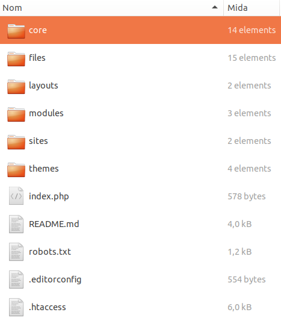Gestió de configuracions en arxius
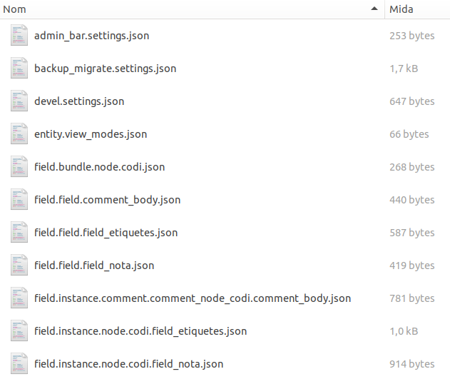Gestió de configuracions via web
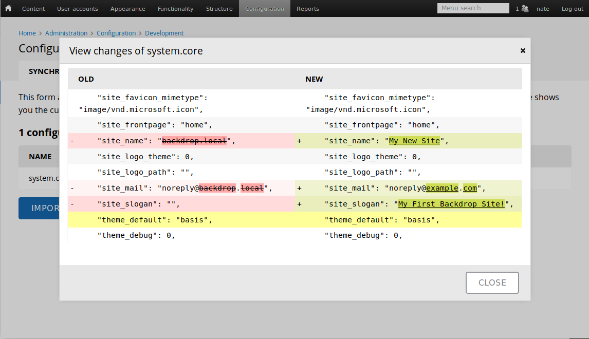Gestió de configuracions via drush

Drush
bcex: exportació configuracions
bcim: importació configuracions
No funcionen (encara): up, en, dis
Sí funciona: dl
Mòdul Devel
Theme debug
dpm()
Totes les altres funcionalitats
Sistema de plantilles
Similar a D7
Motor de plantilles: phpTemplate
Adaptació al nou sistema de dissenys
Sub-plantilles
Dissenys (Layouts)
Nova eina de construcció de l'estructura.
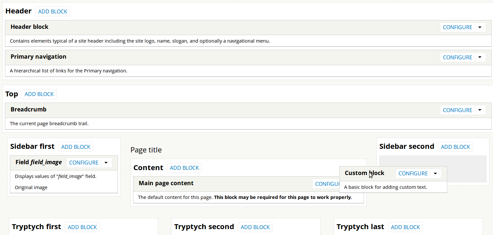Separació dels conceptes de Plantilla i Estructura del lloc
Canvi de plantilla
A Drupal 7
Canviar plantilles mou només els blocs que estan en regions amb el mateix nom.
Regions inexistents? Els blocs desapareixen.
Estructura del lloc (posicions dels blocs) estretament lligada amb l'aparença (plantilla).
A Backdrop
Dissenys (layouts) diferents de les plantilles.
Canviar de plantilla no té efecte en la posició dels blocs.
Tots els temes tenen un disseny sensible.
Estructura de lloc separada de l'aparença.
Nou sistema de dissenys (layouts) basats en Bootstrap 4
Mòduls
Capa de compatibilitat amb Drupal
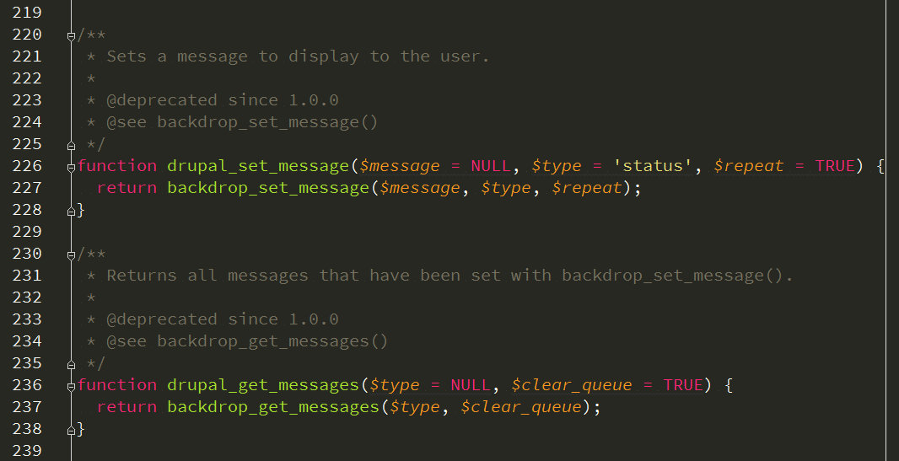Mòduls (2)
Programació funcional (no OO).
Noves funcions incloses al nucli.
Mòdul per convertir mòduls, Coder Upgrade: https://backdropcms.org/project/coder_upgrade
Recursos
APIs
Codi
Github
Backdrop i incidències: https://github.com/backdrop
Mòduls/Plantilles/Layouts: https://github.com/backdrop-contrib
Operacions: https://github.com/backdrop-ops
Lando
Comunitat
Fòrums
https://forum.backdropcms.org/
Google Hangouts
Cada dijous a les 19h CET. Mini-sprint posterior
https://plus.google.com/+BackdropcmsOrg